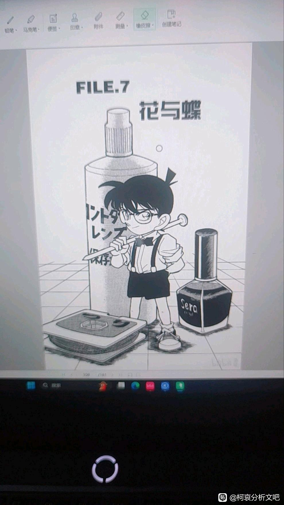
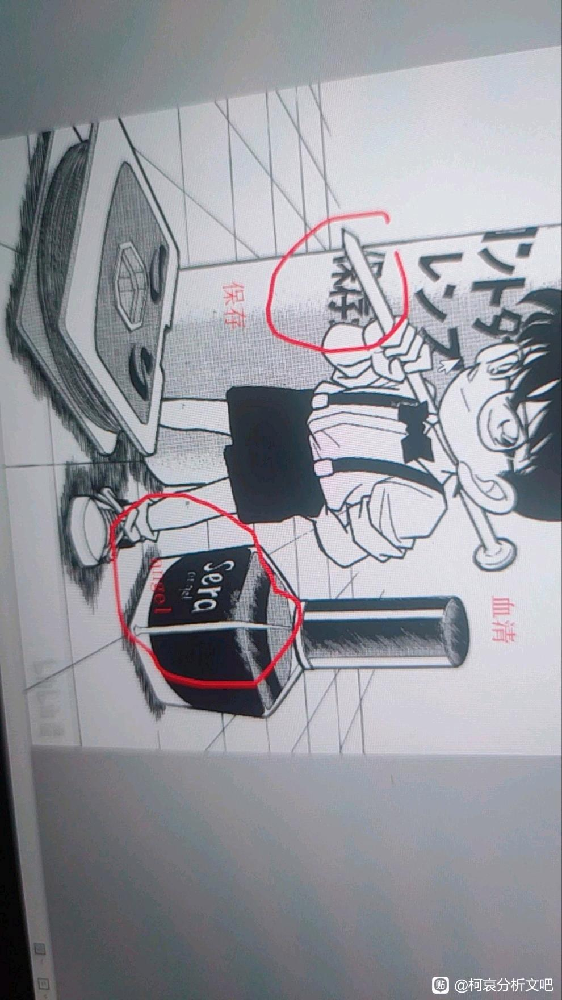
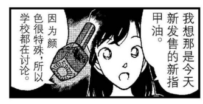

如图一，这一页出自单行本第13卷第7话的扉页，这一页但看不会有什么问题，但如果细看，会发现一个疑点，如图二，化妆品上刻有“angel”和“sera”的字样，那么angel都知道，是天使，那么，sera呢，根据搜索，解释为名词血清，那么，放化妆品里应该是描述颜色，也就是说这化妆品的颜色应该是血红色，而如果连起来读，“sera angel”，亦或者是描述为天使被血红色包围，寓意都能用6个字概括——血红色的天使，也就是堕天使，巧合的是，小兰她有这个化妆品，那么，是不是可以说明小兰是堕天使的另一证据


angel字样不是很清楚，各位可以去翻一下，有待指正

小兰也只是知道而已（剧情设计上是为了补充说明）另外我个人认为，真正的这些伏笔、线索，都在18卷小哀正式出场以后才开始铺陈。
其实我感觉毛利兰真配不上撒旦，撒旦是西方的魔王之王，最有逼格的神话反派啊，甚至一度被当成反抗暴权的象征。
毛利兰能说出“与其在天堂为奴，不如在地狱称王”这样霸气的话语吗？
毛利兰能说出“与其在天堂为奴，不如在地狱称王”这样霸气的话语吗？
2024-09-20 15:49 | 贴吧用户_a62t8Pb:我也蛮喜欢这个形象的，单论主观感受不愿意二者有牵连，虽然客观上感觉有一定概率（点烟
红色或许是线索
每个角色都是作者的心头肉，撒旦论真的很扯
2024-09-20 00:52 | 贴吧用户_GQD81E6:不一定，你要知道小兰一开始是没有角的 当时动画组强制让青山写日常 导致小兰成为了日常线的boss开始长出来角 或许青山对小兰喜爱 但是剧情里小兰的定位就是不太好
sera 不一定是英文， 法语是成为的意思，意大利语是夜的意思。
这个类型的符号是不影响表面剧情的信号，就是说表面上是平淡无奇的东西但是看得懂的人会发现布局。 把化妆品命名为血是太吸引关注了，不符合手法。
这个 sera 是法语或意大利语，偏向法语因为。。。天机不可泄露
这个类型的符号是不影响表面剧情的信号，就是说表面上是平淡无奇的东西但是看得懂的人会发现布局。 把化妆品命名为血是太吸引关注了，不符合手法。
这个 sera 是法语或意大利语，偏向法语因为。。。天机不可泄露
2024-09-20 00:47 | 贴吧用户_G39R59M:我不知道搜狗百科对不对，但是搜狗里搜sera，译文昔拉，犹太传统故事的堕天使，司章:死亡，特征:外形很像蝴蝶2024-09-20 00:48 | 贴吧用户_G39R59M:因为维基百科翻墙都进不去，所以只能用搜狗了2024-09-20 00:52 | dyhoes007:Ran-chan sera l'ange (ou la fausse ange) ?2024-09-20 04:22 | 贴吧用户_0795E8E:回复 贴吧用户_G39R59M :没这个. sera hebrew= sarah 是公主的意思2024-09-20 08:01 | 贴吧用户_G39R59M:回复 贴吧用户_0795E8E :哪里搜的2024-09-20 08:01 | 贴吧用户_G39R59M:回复 贴吧用户_0795E8E :我用edge搜的，一搜就有2024-09-20 09:26 | 贴吧用户_0795E8E:回复 贴吧用户_G39R59M :没可能是这种东西
血清是淡黄色的
2024-09-20 01:08 | 贴吧用户_G39R59M:所以现在不是血红色了，是sera是指什么，有说指公主有说指堕天使，但是百科里提到sera是九大堕天使之一，形状酷似蝴蝶，
血液是红色的是因为红细胞
世良也是sera（せら）
2024-09-20 12:35 | mangomengke07:我其实也是第一反应世良2024-09-20 13:30 | 贴吧用户_GGXM4yS:夏亚的妹妹也是塞拉

说起来想起来隔壁《妖精的尾巴》冥府之门篇章也有个叫塞拉的女性恶魔，因为非常漂亮所以印象深刻，不过貌似是“seria”（没多大关系，单纯联想）
想多了，而且我觉得毛利兰的形象和撒旦不符合，也许作者对她有很深的感情，但她顶多顶多算是天使，到不了大天使也到不了撒旦的级别
这个2016年有日本网友研究过，并且问了青山是不是跟世良有关系，青山的回复：
是当时沉迷的卡片游戏中的卡片名称，和世良（真纯）没有关系
网页链接
※「セラ・エンジェル」はその頃ハマっていたカードゲームのカードの名前で世良ちゃんとは関係ないそうです（Twitter/2017年年賀状返信）
是当时沉迷的卡片游戏中的卡片名称，和世良（真纯）没有关系
网页链接
※「セラ・エンジェル」はその頃ハマっていたカードゲームのカードの名前で世良ちゃんとは関係ないそうです（Twitter/2017年年賀状返信）
2024-09-21 20:13 | 平者深黑:这个日本网友的推测里提到宫野艾莲娜本姓世良，艾莲娜也是天使，所以推测sera angel跟世良有关系是合理的，但是既然被青山否定了，那就不用往这方面去想了。不知道能不能找到青山当年玩的什么卡牌游戏2024-09-21 22:04 | 平者深黑:lpslzl10点hatenadiary点jp/⭐️entry/🎶2016/08/27/
204547
漫画里不是说艾莲娜是Satan
我觉得大家对撒旦论和相关的角论不用那么执着，别去刻意寻找论据或者曲解某些画面台词，因为73不太可能石锤这种偏象征意义的符号。
另外我认为就算73真的有意将mll放在撒旦这个位置，那也跟善恶二元论无关，她更像是给与新柯试炼、逼他成长的定位，跟哀的辅助扶持属性作对比。在一神教中唯一神既然允许恶魔存在，那就说明恶魔也是某种意义上的神使，只是他们履行的职能与天使对立。
另外我认为就算73真的有意将mll放在撒旦这个位置，那也跟善恶二元论无关，她更像是给与新柯试炼、逼他成长的定位，跟哀的辅助扶持属性作对比。在一神教中唯一神既然允许恶魔存在，那就说明恶魔也是某种意义上的神使，只是他们履行的职能与天使对立。